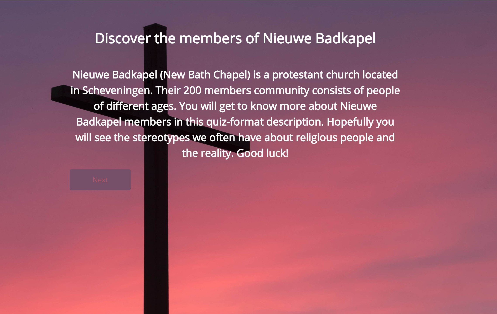

My chosen subculture was a protestan church located in Scheveningen. I chose a church particulary because I am not religious.
I conducted 3 interviews with people who regularly attend Nieuwe Badkapel and one non-participant observation.
Insights and other foundings were presented in a "quiz" format to make the etnographic description engaging.
